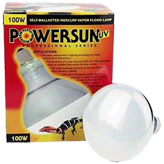

|
PRINCIPIOS B�SICOS DE ILUMINACI�N Y TIPOS DE L�MPARAS
Testudinae.com, 2004
1. Gama de radiaciones.
A
la hora de iluminar un terrario, lo primero que hay que tener claro es
que no basta con que "se vea iluminado", por decirlo de alguna manera.
Las tortugas en la naturaleza reciben de una �nica fuente, el Sol, una
gama muy amplia de radiaciones, algunas de ellas invisibles, pero de
gran importancia para la salud del animal.
En un terrario deberemos proporcionar toda esa misma gama de
radiaciones. Y lo habitual es que no podamos conseguir todo eso con un
�nico tipo de l�mpara, de manera que tendremos que combinar diferentes
fuentes de luz para que en conjunto la tortuga reciba todo lo que
necesita. Dividimos esa radiaci�n que las tortugas reciben del Sol en
cuatro franjas, que explicaremos orden�ndolas de menor a mayor
frecuencia:
1.1. Radiaci�n infrarroja. De frecuencia inferior a la luz
visible. Nuestros ojos no la ven, pero la percibimos en forma de
calor. Es una radiaci�n no da�ina (es poco energ�tica y no altera los
tejidos vivos) pero muchos cuerpos la absorben y se convierte en
calor. La Tierra mantiene una temperatura adecuada para la vida
b�sicamente gracias a la radiaci�n infrarroja que recibe del Sol. Y
las tortugas est�n adaptadas para aprovechar esa radiaci�n para
regular su temperatura. Cuando la temperatura ambiente es inferior a
los 30 grados, las tortugas buscan ponerse al Sol. As� su cuerpo
absorbe la radiaci�n infrarroja, y consiguen una temperatura corporal
por encima de la temperatura del aire que les rodea.
1.2. Luz visible. Empieza por los colores rojos, de menor
frecuencia y termina en el violeta. Las tortugas utilizan la luz
visible igual que nosotros, para poder ver. Y su ciclo vital se adapta
al ciclo de luz d�a-noche, y tambi�n a los cambios de duraci�n de esa
luz a lo largo de las estaciones del a�o.
1.3. Radiaci�n ultravioleta A (UV-A). Queda tambi�n fuera de
nuestro margen de visi�n, no la percibimos, en este caso porque su
frecuencia es superior a la m�xima que nosotros podemos ver (violeta).
Es m�s energ�tica, de manera que es capaz ya de provocar ciertos
cambios en los tejidos vivos. Es la responsable de que nos bronceemos
al ponernos al Sol, pues nuestra piel reacciona ante esa radiaci�n
incrementando la producci�n de pigmentos para protegerse de ella.
Aunque no llega a ser a�n muy da�ina.
Nosotros no notamos en absoluto si un sistema de iluminaci�n produce
m�s o menos UV-A, nuestra vista no lo capta. Pero resulta que los ojos
de los reptiles s� que ven algo dentro de la gama UV-A. Y notan la
diferencia, y eso tiene un efecto "psicol�gico" en ellos. Parece ser
que la luz UV-A tiene un papel importante en la manera como reconocen
la comida, y en ciertos reptiles tambi�n para captar el color de
pigmentos de su piel que van ligados al sexo. Por tanto, es importante
proporcionar un nivel de UV-A parecido al del Sol, para que las
tortugas "vean" de manera normal. Eso les ayuda a encontrarse mejor,
estimula su actividad y su apetito.
1.4. Radiaci�n ultravioleta B (UV-B). M�s energ�tica a�n,
invisible, y con mayor tendencia a provocar reacciones en los tejidos
vivos. Las tortugas no la ven, pero la aprovechan para provocar en su
piel una reacci�n qu�mica que les permite obtener la vitamina D3. Y
esa vitamina es esencial para poder absorber el calcio y poder formar
los huesos y el caparaz�n. Al mantener una tortuga en interior, sin
acceso a la luz del Sol, se le debe suministrar vitamina D3 con la
comida, o bien, mucho mejor, proporcionarle radiaci�n UV-B para que el
mismo animal pueda obtener la vitamina D3 que necesita. Aunque se
requiere precauci�n, la radiaci�n UV-B en dosis excesivas puede da�ar
gravemente la vista de las tortugas, y tambi�n la nuestra.

Testudo graeca
silvestre asole�ndose (Sergio S�nchez).
2. T�cnicas de producci�n de radiaci�n.
El
Sol produce esos cuatro tipos de radiaci�n (y muchas m�s) gracias a
que se trata de un cuerpo incandescente a alt�sima temperatura: casi
6000 grados en su superficie, y m�s de dos millones de grados en su
n�cleo interior. Como comprender�is, no es nada f�cil tener algo as�
dentro de casa. De manera que no existe ninguna l�mpara capaz por si
sola de sustituir al Sol. Deberemos utilizar t�cnicas diferentes para
producir esas diversas gamas de radiaci�n y combinarlas para tener en
conjunto una iluminaci�n lo m�s correcta posible.
Tenemos b�sicamente dos t�cnicas �tiles para producir radiaci�n:
2.1. Calentar un metal aplic�ndole una corriente el�ctrica, de
manera que este tiende a volver a su estado inicial liberando en forma
de radiaci�n la energ�a acumulada. Eso es lo que hace el filamento
incandescente de una bombilla. Con este m�todo se producen frecuencias
muy variadas, porque se dan muchos niveles de energ�a posibles dentro
del metal caliente. El problema es que, aunque obtener frecuencias
bajas (infrarrojo y luz visible en la gama rojo-amarillo) es muy
f�cil, ya no lo es obtener frecuencias altas, pues se requerir�a un
filamento a temperatura muy alta, y en la pr�ctica eso no es posible,
cualquier material utilizado se funde. Por tanto de este modo no
podemos obtener UV-A en cantidades apreciables, y mucho menos UV-B.
Seg�n la temperatura a la que trabaja el filamento tendremos:
- L�mparas infrarrojas: Filamento grande que trabaja a poca
temperatura. Emite b�sicamente radiaci�n infrarroja, �til como medio
de calefacci�n.
- L�mparas incandescentes ordinarias (bombillas, focos de
asoleamiento): Producen tambi�n mayoritariamente infrarrojos, pero
tambi�n luz visible, aunque con un nivel de azul muy inferior al de la
luz del Sol.
- L�mparas hal�genas: El filamento va encerrado en un tubo de cuarzo
lleno de un gas hal�geno que permite que el material evaporado del
filamento se vuelva a depositar de nuevo regener�ndolo. As� se
consigue trabajar a m�s temperatura sin que el filamento se estropee
r�pidamente. Por eso la luz producida es menos amarillenta, tiene
mejor proporci�n de azul. Pero tampoco es suficiente para producir
niveles adecuados de UV-A y a�n menos UV-B.
2.2. Utilizar una l�mpara sin
filamento (l�mpara de descarga), en la que la corriente el�ctrica pasa
directamente a trav�s de un gas ionizado. De este modo evidentemente
no existe el problema de un filamento que se funda. Y escogiendo
adecuadamente el gas se pueden conseguir f�cilmente radiaciones de
alta frecuencia, como UV-A y UV-B.
Para su uso con reptiles b�sicamente se emplean l�mparas de descarga
de vapor de mercurio, que produce UV-A y UV-B, pero muy poca luz de
frecuencia m�s baja. Es decir, justo el inconveniente contrario a las
l�mparas incandescentes. Y otra pega es que emiten niveles altos de
radiaci�n pero en frecuencias muy concretas, con poca variedad de
frecuencias. Muy diferente a la emisi�n del Sol (y de las bombillas
incandescentes dentro de su rango �til) que da un espectro mucho m�s
continuo.
Por tanto se deben combinar de alg�n modo esas diferentes t�cnicas
para proporcionar en un terrario toda la gama de radiaci�n que las
tortugas necesitan.

Testudo Kleinmanni calent�ndose bajo
un foco hal�geno (Fernando P�rez).
3. Posibilidades.
3.1. Iluminaci�n completa con una sola l�mpara.
Es posible en determinadas condiciones, aunque con una peque�a trampa:
usando una l�mpara que en realidad son dos l�mparas en una. Existe un
tipo de l�mparas para reptiles que combinan en un mismo foco reflector
las dos t�cnicas que antes hemos explicado: por un lado un filamento
incandescente, que produce calor en forma de infrarrojos y luz visible
(como una bombilla ordinaria), y por otro lado un tubo de descarga de
cuarzo lleno de vapor de mercurio a alta presi�n, que se encarga de
producir radiaci�n UV-A y UV-B en abundancia.
El filamento incandescente tiene aqu� una importante misi�n, m�s all�
de la producci�n de luz: permite el encendido de la l�mpara de vapor
de mercurio, ayudando a calentar el gas, y tambi�n regula la corriente
que pasa a trav�s del tubo de descarga. De este modo no se necesita
ning�n tipo de reactancia para encender y regular la l�mpara. Se monta
simplemente en un portal�mparas ordinario de rosca conectado
directamente a la red el�ctrica.
B�sicamente son dos los modelos comerciales de l�mpara de este tipo
que podemos utilizar, muy similares: T-Rex UVHeat y Zoomed Powersun.
Las dos se venden normalmente en versiones de 100 W o 160 W, aunque
tambi�n se fabrican modelos m�s potentes para grandes instalaciones.
Son l�mparas ya dise�adas para reptiles, y en las que el cristal
exterior est� formulado expresamente para dejar pasar la cantidad
adecuada de UV-A y UV-B.
Emiten niveles de UV-B mucho m�s altos que los tubos fluorescentes
para reptiles. Y son efectivas aunque las situemos a distancias
mayores de 30 cm. (a partir de la cual los tubos sirven de muy poco).
A 30 cm. emiten unos niveles de UV-B similares a los del sol a
mediod�a en la zona mediterr�nea. Y a 60 cm. a�n emiten dosis m�s que
suficientes para un reptil.
Para utilizarla como �nica fuente de luz y foco de calor, la distancia
la debemos ajustar de modo que la tortuga obtenga una buena
temperatura (32-34 grados) al asolearse debajo de la l�mpara. Yo he
observado que la distancia correcta es de unos 42-45 cm. para los
modelos de 100 W y de 50-55 cm. para los de 160 W. Lo cual ya est�
dentro del rango �til de la l�mpara respecto a la emisi�n de UV-B.
|

Powersun, de Zoomed�. |
UV-Heat, de T-Rex�. |
Ventajas: Montaje simple, sin largos tubos y soportes llenando la zona
superior del recinto. Y se puede poner a mayor distancia que los
tubos, como se ha explicado. Muy c�modo por tanto para instalaciones
del tipo "mesa de tortugas". Niveles de UV-B elevados y que se
mantienen as� durante m�s de dos a�os, a diferencia de los tubos que
empiezan a perder eficacia al cabo de unos meses y se deben sustituir
al menos una vez al a�o.
Inconvenientes: precio elevado (unos 95 euros) aunque su mayor
duraci�n y el no necesitar soportes caros ni reactancias puede llegar
a compensar eso. Dif�ciles de conseguir hasta ahora, especialmente los
modelos de 100 W. Normalmente se encuentran s�lo en tiendas muy
especializadas en reptiles, y a�n as� muchas veces por encargo. Aunque
poco a poco se empiezan a popularizar. En Alemania ya cuestan casi la
mitad que aqu�.
Sus altas emisiones UV-B pueden llegar a ser perjudiciales para una
tortuga que no tenga posibilidad de escapar de ellas. No son
aconsejables para peque�os terrarios cerrados de cristal. Pero s� van
bien en instalaciones tipo "mesa de tortugas" m�s abiertas, situando
la l�mpara a un lado, y dejando en en lado opuesto una zona poco
expuesta y con alg�n refugio. Y s�lo para especies de tortugas bien
adaptadas a condiciones de luz solar intensa. Con especies de selvas
tropicales, etc., mejor buscar soluciones de iluminaci�n m�s moderada.
Y por �ltimo, el filamento es fr�gil, se puede fundir f�cilmente, como
en una bombilla ordinaria, y dejar inutilizada la l�mpara. Es
fundamental no mover la l�mpara mientras funciona, y montarla en un
soporte s�lido, a salvo de vibraciones. Por ejemplo, un soporte bien
fijado a la pared, por encima del terrario. Si se hace as� la l�mpara
puede durar hasta tres a�os. En caso contrario dif�cilmente durar� m�s
de 6 meses. Tambi�n requiere un portal�mparas cer�mico de calidad, que
no se recaliente, y debe funcionar en posici�n completamente vertical,
porque si no es as� la protecci�n t�rmica de la l�mpara se disparar� y
funcionar� de modo intermitente, con lo que se acabar� estropeando.
Habr�a que a�adir
un comentario sobre las l�mparas de vapor de mercurio
de alumbrado convencional, como las Osram HQL Deluxe, no dise�adas
espec�ficamente para reptiles.
Muchos aficionados utilizan las HQL en terrarios y las consideran
v�lidas como fuente de UV-B para tortugas. Es una idea que se ha
difundido bastante, sobre todo unos a�os atr�s. Estas recomendaciones
ven�an de aficionados en foros, o a lo sumo de alguna tienda de
accesorios que tambi�n las vend�a, pero sin ning�n dato concreto que
avalase su producci�n de UV-B. En cambio, todos los sitios serios que
recomiendan las l�mparas de vapor de mercurio (Tortoise Trust, etc.)
siempre se refieren a l�mparas dise�adas para reptiles, b�sicamente la
UV-Heat, que fue la primera que apareci� en el mercado.
Cuando no exist�an todav�a las l�mparas especiales para reptiles,
parece l�gico que se experimentase con l�mparas de alumbrado
convencional, pero hoy en d�a no es necesario poner en riesgo la salud
de los animales bas�ndose en suposiciones, cuando existen l�mparas ya
pensadas para eso. Lo �nico "oficial" respecto al uso de las HQL con
reptiles es que no hay datos oficiales. No hay datos del espectro de
las Osram HQL Deluxe en la zona UV-B. L�gico pues no es una l�mpara
pensada para eso, y Osram no se molesta en ofrecer esos an�lisis. Lo
que s� hay son espectros de l�mparas similares de Sylvania (marca que
tambi�n es propiedad de Osram) y de la Osram HWL (de luz negra) que NO
muestran ninguna emisi�n apreciable de UV-B en la zona �til para
reptiles. �Se podr�a a�n as� creer que la HQL Deluxe es diferente y
si emite UV-B? Es muy poco probable, e incluso poco l�gico. Por dentro
todas son parecidas, el tubo de descarga de cuarzo s� que emite UV-B
en cantidad, pero el problema es el cristal exterior. Los fabricantes
de l�mparas para reptiles ya buscan expresamente cristales que dejen
pasar UV-B, pero para una l�mpara de alumbrado es innecesario, absurdo
y peligroso hacerlo as�. En todas las l�mparas modernas de descarga de
Osram es justo al rev�s, les a�aden expresamente un filtro UV. En la
HQL Deluxe no es as� (hasta ahora) por eso emiten UV-A, pero de ah� a
que emitan UV-B, hay un buen trecho. Es posible que alg�n modelo de
HQL fabricado en alg�n momento, por alguna casualidad, tenga un
cristal que s� dejaba pasar UV-B, pero es arriesgado fiarse entonces,
porque eso puede haber variado mucho a lo largo de los a�os de
fabricaci�n de la HQL, de una serie a otra, o seg�n el lugar donde se
ha fabricado, etc. Sin un medidor de UV-B a mano, es in�til especular
sobre su producci�n d UV-B.
Dicho sea de paso, de medidores de UV-B hasta hace poco s�lo
conoc�amos los de Zoomed, que son muy, muy caros. Pero los
Solarmeter 6.2
tienen ahora un precio ya m�s asequible, 179 d�lares. Ser�a, no s�lo
la manera de salir de dudas, sino tambi�n una buena ayuda para
comprobar el buen estado y la duraci�n de tubos y l�mparas. Para un
aficionado que utilice de forma habitual varias l�mparas o tubos para
reptiles, un medidor as� parece una buena inversi�n. En la
lista de
correo de estos medidores nunca se han preocupado de dar
mediciones de l�mparas de vapor de mercurio de alumbrado p�blico, s�lo
de modelos espec�ficos para reptiles. Cosa que hace dudar a�n m�s de
que realmente las HQL emitan algo de UV-B.
3.2. Iluminaci�n combinada con tubos fluorescentes y l�mparas
incandescentes.
Es la soluci�n m�s cl�sica y probada para proporcionar toda la
radiaci�n que requiere la tortuga.
Un tubo fluorescente est� lleno de un gas inerte (arg�n) que
contiene peque�as cantidades de mercurio. En los extremos, dos
electrodos hacen pasar corriente a trav�s del gas. Una reactancia
regula la cantidad de corriente, y un circuito cebador ayuda en el
momento del encendido. Se trata en realidad de una l�mpara de descarga
en vapor de mercurio pero a baja presi�n. Eso produce casi
exclusivamente luz ultravioleta. Pero interviene en este punto la
sustancia "fluorescente" que recubre el interior del tubo. Ese
material absorbe la luz ultravioleta producida por el gas, y luego
vuelve a liberar esa energ�a emitiendo luz visible, de tonalidades que
var�an seg�n la combinaci�n de substancias fluorescentes empleadas,
que son habitualmente diferentes compuestos de f�sforo. Los
fluorescentes producen muy poco calor, no emiten apenas infrarrojos,
por tanto se deben usar en un terrario siempre combinados con otro
tipo de l�mparas que s� produzcan infrarrojos.
Los fabricantes de fluorescentes para reptiles los comercializan de
diferentes tipos, que se suelen nombrar a partir del porcentaje de
radiaci�n UV-B que emiten, en relaci�n al total de radiaci�n (visible,
UV-A y UV-B, todo junto) que emite el tubo: se habla as� de tubos 2.0,
tubos 5.0 y 8.0, que emiten un 2% de UV-B, un 5% y un 8%
respectivamente.
|

Tubo
Reptisun de Zoomed�.
|

Pantalla para
tubos fluorescentes. |
- Tubos 2.0: est�n pensados para situaciones en que no se
requiere un elevado nivel de UV-B (serpientes, anfibios, etc.), y en
cambio se intenta producir una luz lo m�s natural posible para el
animal, con un buen nivel de UV-A y tonalidades tan parecidas como se
pueda a la luz solar. Los tubos 2.0 son los que tienen mejor �ndice de
color (CRI), es decir, los que iluminan reproduciendo los colores de
la manera m�s parecida a como se ver�an a la luz del sol. Pero por s�
solos, no proporcionan suficiente UV-B para que una tortuga sintetice
adecuadamente la vitamina D3. Pueden ser �tiles en un terrario de
tortugas para completar la iluminaci�n, suponiendo que ya se disponga
de otras fuentes de UV-B. Por ejemplo, pueden servir para iluminar de
forma natural el extremo "oscuro" de una mesa de tortugas que ya tenga
en el otro lado una l�mpara de vapor de mercurio como las citadas en
el anterior apartado A.
- Tubos 5.0: pensados expresamente para facilitar la producci�n
de vitamina D3 en reptiles. Emiten un 5% de radiaci�n UV-B y un 30% de
UV-A. El resto es luz visible. No tienen un �ndice de color tan bueno
como los 2.0 (su luz es demasiado azulada). La soluci�n de iluminaci�n
m�s cl�sica en un terrario es utilizar un s�lo tubo 5.0 (o varios,
seg�n el tama�o del terrario) situado a menos de 30 cm. de la tortuga,
combinado con una bombilla o foco reflector incandescente, que a�ade
luz en la franja del rojo-anaranjado y proporciona calor para que el
animal pueda asolearse bajo la l�mpara. M�s adelante, cuando hablemos
de ventajas e inconvenientes, me referir� sobretodo a esta combinaci�n
- Tubos 8.0: Con un 8% de UV-B. Algunos fabricantes los venden
para terrarios de tipo des�rtico (Exo Terra Repti Glo 8.0). En cambio,
alg�n fabricante tan reconocido como Zoomed se niega a fabricar tubos
con m�s de un 5% de UV-B, por los posibles riesgos para la visi�n.
- Fluorescentes compactos: Adem�s de estos cl�sicos tubos
fluorescentes rectos, en los �ltimos a�os han aparecido tambi�n en el
mercado fluorescentes compactos, a imitaci�n de las bombillas de bajo
consumo dom�sticas. El primero fue el Arcadia D3 compact reptile lamp,
con un 7% de UV-B y un 30 % de UV-A. La misma marca tambi�n vende
ahora un modelo de tipo 2.0. Y Zoomed tambi�n ha empezado a
comercializar l�mparas compactas de este tipo, en versiones 5.0 y 10.0
(aqu� parece que s� se han decidido a aumentar los niveles de UV-B).
Los fluorescentes compactos son en todo equivalentes a los tubos, pero
de montaje m�s c�modo, basta un simple soporte con casquillo de rosca.
Aunque son bastante m�s caros, pues incluyen el sistema de encendido.
Y cuando se substituye el fluorescente, se cambia todo a la vez,
mientras que en los tubos rectos la reactancia se mantiene al renovar
el tubo, as� a la larga resultan mucho m�s econ�micos.
|
Fluorescente compacto de Arcadia�. |
Portal�mparas
para compactas. |
Ventajas e inconvenientes de los tubos para reptiles
- Ventajas: Precio Un tubo 5.0 cuesta entre 15 y 45 euros, seg�n
marcas y tama�os. Bajo consumo, aunque habr� que sumarle una l�mpara
incandescente para proporcionar calor.
- Inconvenientes: Montaje algo aparatoso. F�cil en terrarios o
acuaterrarios que ya tienen previsto un lugar para alojar tubos
fluorescentes. En este caso es vital eliminar cualquier cristal o
l�mina protectora que tape el fluorescente, la luz debe llegar
directamente del tubo a la tortuga, sin atravesar ning�n material que
impida el paso de la luz UV-B. En alojamientos hechos a medida ser�
necesario comprar un soporte para tubos, o hacerlo nosotros mismos
comprando en una ferreter�a los soportes, la reactancia, cebador, etc.
Alcance escaso: Apenas son efectivos si se sit�an a m�s de 30 cm. del
animal. En ciertas instalaciones colocar tubos suspendidos tan cerca
de las tortugas puede ser algo engorroso.
Duraci�n limitada. Se deben cambiar al menos una vez al a�o, pues
aunque el tubo aparentemente funcione bien, su emisi�n de UV-B se va
reduciendo. Y el problema es que un tubo a veces puede fallar
prematuramente en ese aspecto, y es dif�cil de detectar ese descenso
sin un medidor de niveles de UV-B (un artilugio bastante caro). Para
m�s seguridad es mucho mejor montar dos tubos a la vez en el terrario.
Los tubos fluorescentes producen muy poco calor. Por eso son tan
eficientes como fuente de luz, la energ�a el�ctrica que consumen se
dedica a producir luz visible, pero apenas radiaci�n infrarroja, que
para la iluminaci�n de una vivienda o local es un gasto in�til. Pero
resulta que una tortuga s� que necesita radiaci�n infrarroja, para
calentarse y regular su temperatura corporal, como explicamos al
principio.
Por tanto, adem�s del fluorescente necesitamos a�adir alg�n tipo de
l�mpara incandescente que produzca infrarrojos, al menos sobre una
parte del terrario. Se trata de crear un punto caliente, una zona
donde la tortuga pueda calentarse y conseguir una temperatura de unos
32-34 grados. Por muy correcta que sea la temperatura "general" del
terrario, esa zona de calor radiado extra es imprescindible. El tipo
de l�mpara, su potencia y sobre todo la distancia a la que la
coloquemos, se deben escoger adecuadamente de cara a conseguir esa
temperatura de 32-34 grados bajo la l�mpara. Podemos utilizar para
ello:
- Bombillas ordinarias: Son la opci�n m�s barata, de hecho
cualquier bombilla sirve.
- Focos reflectores: Tambi�n corrientes y baratos, con
casquillo de rosca, comprados en ferreter�as. Son bastante m�s
eficientes, pues concentran mejor el calor en una zona. La potencia
requerida variar� seg�n lo amplia que sea la zona que queramos
calentar. Una l�mpara m�s potente, la situaremos m�s lejos, y
mantendr� la temperatura alta en una zona m�s amplia, aunque a costa
de un mayor consumo.
|

Foco reflector. |

Portal�mparas
con pinza. |

Portal�mparas
con brazo flexible. |
Para una o dos tortugas peque�as puede bastar crear un peque�o punto
de asoleamiento con una bombilla reflectora de 40 W de rosca peque�a,
montada en una l�mpara orientable con soporte de pinza, de esas
baratas para escritorios. �til por ejemplo para calentar la "isla" o
piedra fuera del agua en un acuaterrario para peque�as tortugas
acu�ticas. La distancia entre la bombilla y la tortuga en ese caso
debe ser peque�a, menos de 20 cm. Se debe medir la temperatura con un
term�metro para determinar la distancia correcta. Hay que tener
cuidado de que la tortuga no pueda llegar a tocar nunca la bombilla,
pues sufrir�a quemaduras graves, Vigilad a medida que la tortuga
crezca, o si ten�is varias tortugas acu�ticas tened en cuenta que se
suelen subir unas encima de otras para encontrar un sitio bajo la
l�mpara. Si existe peligro, deber�is poner una bombilla m�s potente
pero situada a mayor distancia.
Para tortugas mayores, o en un terrario de terrestres, ya suele ser
m�s pr�ctico utilizar focos de rosca grande, a partir de 60 W.
Como ya se ha dicho, se debe emplear un term�metro para determinar la
temperatura correcta. Aunque eso tiene ya su dificultad: no estamos
midiendo la temperatura "ambiente" sino calor radiado (infrarrojos) y
lo que marcar� el term�metro depender� mucho de c�mo absorbe el propio
term�metro los infrarrojos. Los term�metros de alcohol te�ido s� que
absorben bien la radiaci�n, y dan una buena medida del calor que est�
generando la bombilla. Pero los term�metros electr�nicos con sonda de
funda met�lica, reflejan la radiaci�n y apenas se calientan, de modo
que dar�n una lectura mucho m�s baja.
El m�todo m�s fiable dir�a que es medir poniendo la punta del
term�metro ligeramente enterrada en el substrato (lo justo para que
quede tapada, y dejar la l�mpara funcionando mucho rato. Eso dar� un
valor bastante parecido a la temperatura que alcanza la tortuga bajo
la l�mpara.
|
Portal�mparas
de cer�mica. |

Portal�mparas
con protecci�n. |

Portal�mparas
para l�mparas de cer�mica. |
- Focos de asoleamianto especiales para reptiles ("basking lamps"):
M�s caros, y sin grandes ventajas, salvo que est�n
corregidos para que den una luz m�s azulada, m�s parecida a la luz
diurna. Pero que quede claro que esa correcci�n se consigue por
"filtrado", es decir, eliminando algo de rojo. En ning�n modo son
l�mparas que produzcan mucha luz azul, y a�n menos luz ultravioleta.
Por mucho que lo anuncie el fabricante, esas l�mparas no producen UV-B. Son simples bombillas incandescentes.
- L�mparas hal�genas: Hemos hablado de ellas al principio del
tema. Esas s� que producen una luz m�s natural, con mayor contenido de
azul (aunque tampoco emiten UV-B en cantidades apreciables), pues el
tubo lleno de gas hal�geno permite que el filamento trabaje a mayor
temperatura. Son por ello bastante interesantes para reptiles, aunque
m�s caras, y si son del tipo "tubo" necesitar�n su correspondiente
soporte reflector.
- Bombillas infrarrojas: Aqu� es justo lo contrario, una
bombilla incandescente con un filamento grueso que trabaja a
temperaturas bajas (como una bombilla de linterna cuando se le van
acabando las pilas). Emite la mayor parte de su radiaci�n en la franja
del infrarrojo, y poca luz visible. Adem�s suelen tener el cristal de
color rojo oscuro para reducir a�n m�s la parte de luz visible. La
ventaja es que el filamento se desgasta menos, son l�mparas de mayor
duraci�n. Pueden ser �tiles para suplementar el calor radiado por
l�mparas de luz visible. Pero no conviene usar exclusivamente un foco
infrarrojo para el asoleamiento. Las tortugas instintivamente buscan
las zonas de luz intensa para calentarse. Si s�lo tienen un foco
infrarrojo, tambi�n lo usar�n, pero les costar� bastante m�s
orientarse hacia la zona de temperatura �ptima.
- L�mparas cer�micas: Acentuando a�n m�s el principio de las
infrarrojas, son l�mparas que calientan pero no emiten nada de luz
visible. M�s caras pero de muy larga duraci�n. �tiles para calentar un
terrario sin a�adir m�s luz, y especialmente como fuente de calor
durante la noche, sin emitir luz que moleste a los animales. Pero como
foco exclusivo de asoleamiento, pues se puede decir lo mismo que para
las infrarrojas. Cuidado tambi�n con las l�mparas cer�micas de elevada
potencia. Por motivos de seguridad deber�an ir reguladas con
termostato para evitar temperaturas excesivas que podr�an ser fatales
para las tortugas.
|

Foco de
asoleamiento.
|

Bombilla
infrarroja. |
|

L�mpara
hal�gena.
|

L�mpara
cer�mica.
|
|